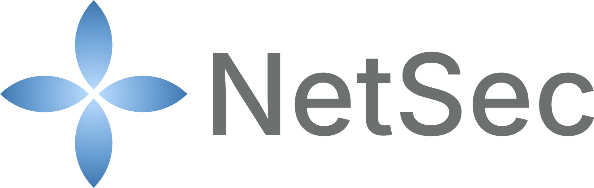

Kit presse NetSec
Tout ce qu'il vous faut pour écrire sur l'Action, la relayer ou la diffuser : les affiches promotionnelles, notre palette de couleurs, notre typographie, la déclaration de financement standard, et les règles de réutilisation.
Un point à souligner : le site propose un coup de projecteur hebdomadaire sur un membre, qui met en avant chaque semaine une chercheuse ou un chercheur de l'annuaire ouvert. La rotation favorise délibérément les chercheur·euses en début de carrière et les membres des pays cibles d'inclusion (ITC), ce qui en fait une mesure d'inclusion concrète plutôt qu'un concours de popularité.
1. Affiches promotionnelles
Des affiches d'une page conçues pour les sessions de conférence, les panneaux d'écoles de formation, les tableaux d'affichage de département, et tout autre moment où un·e passant·e a dix secondes pour saisir ce qu'est NetSec. L'affiche générale présente l'Action ; l'affiche de l'annuaire invite les chercheur·euses à ajouter leur biographie.
{kind=link}
{kind=link}
{kind=link}
{kind=link}
2. Logos et emblèmes
L'Action utilise trois marques ensemble : le sigle NetSec, le logo institutionnel COST, et l'emblème de l'UE. Leur association est contractuelle pour toute communication annonçant des activités ou productions NetSec.

Marque et logo NetSec
Quatre variantes PNG sous assets/images/brand/ : logo principal pour fonds clairs, logo blanc pour fonds sombres, logo monochrome pour l'impression une couleur, et la marque à quatre pétales seule pour les avatars et favicons (595×599). Le placeholder "NS" en CSS pur de l'époque du lancement a été remplacé par la marque dessinée par le designer en v1.8.0 du site.
{kind=link}
{kind=link}
{kind=link}
{kind=link}
Logo institutionnel COST
© COST Association. À toujours associer à l'emblème UE et à la déclaration de financement. Les versions de référence se trouvent dans la charte graphique COST. Le JPG utilisé ici est à assets/images/cost-logo.jpg.
Emblème UE
Utilisé conformément au manuel d'identité visuelle UE pour la mention Financé par l'UE. Le SVG ci-dessus est intégré dans chaque page du site. Copiez la source pour le réutiliser.
Numéro d'Action
Citez toujours CA24154 (et MoU 063/25 dans les communications formelles) en plus du nom NetSec lorsque vous mentionnez l'Action par écrit.
3. Palette de couleurs
Deux couleurs d'accent, plus une couleur d'encre et un fond neutre. Les noms de tokens correspondent à assets/css/site.css si vous voulez rester aligné·e avec le site.
4. Typographie
Deux polices de Google Fonts. Lexend pour l'affichage, Inter pour le corps de texte, à graisses variables, utilisées dans toutes les pages du site.
5. Déclaration de financement standard
Texte standard à inclure dans toute publication, présentation, livrable ou communication externe mentionnant des activités ou productions NetSec. Reproduit intégralement lorsque la place le permet. Versions abrégées ci-dessous.
6. Attribution suggérée
Si vous réutilisez du contenu de ce site (texte des pages, documentation, l'affiche, figures, schémas), la licence CC BY 4.0 vous demande de créditer l'origine et de fournir un lien. Formule suggérée :
Pour les citations académiques, la référence canonique est la fiche de l'Action sur le site COST : www.cost.eu/actions/CA24154/. Les productions individuelles (publications, jeux de données, supports d'écoles) portent leur propre citation, qui prévaut.
7. Règles d'utilisation
✓ À faire
- Associer le sigle NetSec aux emblèmes COST et UE sur la même surface.
- Inclure la déclaration de financement (sous l'une des formes ci-dessus) dans toute communication externe.
- Citer
CA24154etMoU 063/25dans la correspondance formelle. - Réutiliser l'affiche, en version imprimée comme numérique, sous CC BY 4.0 avec attribution.
- Adapter notre palette et notre typographie pour des supports dérivés.
- Transmettre cette page (ou son URL) à quiconque a besoin de nos ressources.
✗ À éviter
- Recadrer le bandeau de financement hors de l'affiche ou de ses dérivés.
- Utiliser le sigle NetSec pour suggérer une caution à un produit ou projet externe.
- Modifier les logos COST ou UE (proportions, couleurs, texte d'accompagnement).
- Utiliser l'affiche comme image Open Graph / image de partage du site, mauvais rapport d'aspect. La carte de partage canonique est
assets/images/og-image.png. - Réutiliser les photos des membres NetSec sans l'autorisation individuelle de chaque personne.
8. Dossier de documentation
Pour une vue d'ensemble du site, du répertoire ouvert et de la technologie sous-jacente, rédigée pour les évaluateur·rices et les futur·es responsables, consultez le dossier de documentation :
Ouvrir le dossier de documentation (PDF, 21 Mo)
9. Contact pour les demandes presse
Pour des entretiens, demandes de photos, clarifications d'attribution ou tout autre sujet non couvert ici, utilisez le formulaire de contact en mentionnant "presse" dans votre message. Réponse sous une semaine ouvrée.
Ce kit presse est maintenu par Dr Arthur Laudrain (membre du CG, CH, ETH Zurich), également responsable du site de l'Action.
Kit presse v1.1 · révisé le 28 mai 2026 · remplace v1.0 · préparé par Dr Arthur Laudrain · correspond au site netsec-cost.eu.